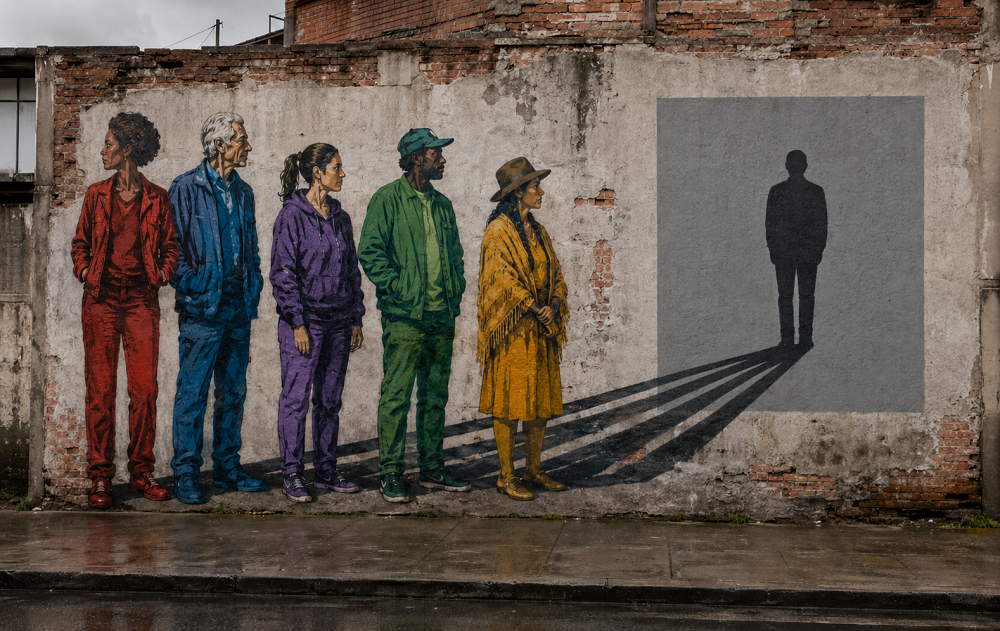

Inicio > Blog Bitácora de un bibliotecario > Bibliotecología comunitaria con un giro decolonial (09)
Bibliotecología comunitaria con un giro decolonial (09)
La ética de la representación en las bibliotecas comunitarias
¿Quién habla en nombre de una comunidad y quién controla lo que se dice?
Este post forma parte de una serie que recupera la bibliotecología comunitaria de sus distorsiones institucionales, devolviéndola a sus raíces en la lucha, la ayuda mutua y la supervivencia colectiva. Considera las bibliotecas no como servicios neutrales, sino como infraestructuras en disputa, atravesadas por relaciones de poder, resistencia y memoria, y explora la bibliotecología como un trabajo de solidaridad anclado en comunidades reales, conflictos reales y la tensión constante entre el control institucional y la autonomía colectiva. Todas las entradas de esta serie pueden consultarse en el índice de esta sección.
La representación como ejercicio de autoridad
A menudo se espera que las bibliotecas comunitarias representen a las personas de su entorno. Sus colecciones deben reflejar la vida local, sus programas deben visibilizar las historias marginalizadas y su lenguaje público debe reconocer las identidades ignoradas por las grandes instituciones. Desde esta perspectiva, la representación parece subsanar una ausencia.
Sin embargo, visibilizar a una comunidad implica bastante más que colocar sus materiales en una estantería o incluir a sus miembros en una exposición. Alguien determina qué personas, experiencias, objetos y eventos representarán a la comunidad. Alguien elige las palabras para describirlos. Alguien establece el contexto en el que se presentarán y decide qué quedará fuera de ese marco.
Estas decisiones generan una versión pública de la comunidad. Una vez incorporada a un catálogo, sitio web, exposición, publicación, colección de historia oral o informe institucional, esa versión puede circular mucho más allá de las relaciones en las que se creó. Puede influir en cómo periodistas, investigadores, organismos públicos, educadores, financiadores y futuros residentes comprenden a las personas representadas.
El problema ético, por lo tanto, comienza con la autoridad. ¿Quién inició la representación? ¿Quién seleccionó su contenido? ¿Quién lo interpretó? ¿Quién aprobó el resultado? ¿Quién se beneficia de su difusión y quién debe vivir con sus consecuencias?
Las buenas intenciones no pueden responder a estas preguntas. Una representación favorable puede identificar erróneamente a las personas, exponer conocimientos protegidos, minimizar el desacuerdo o convertir una lucha política en una relajante historia de diversidad cultural. La representación adquiere legitimidad ética a través de las condiciones bajo las cuales se produce y controla.
El poder del intermediario
Los bibliotecarios suelen ocupar una posición de intermediario. Organizan entrevistas, seleccionan fotografías, escriben pies de foto, preparan exposiciones, editan publicaciones comunitarias, crean registros de catálogo y traducen descripciones locales a metadatos profesionales. Su trabajo conecta el conocimiento comunitario con sistemas capaces de preservarlo y difundirlo.
Esa posición conlleva poder interpretativo.
Una historia oral puede durar dos horas, mientras que la exposición utiliza solo tres frases. Una persona puede describir una experiencia con términos locales que no tienen un equivalente directo en el catálogo, pero el registro requiere un encabezamiento de materia. Un conflicto vecinal puede implicar décadas de desacuerdo, mientras que el programa público necesita una introducción concisa. Incluso el trabajo profesional más meticuloso comprime, ordena y estructura.
El peligro surge cuando la mediación se presenta como transparente. El lenguaje institucional puede hacer que la intervención del bibliotecario desaparezca, haciendo que la descripción resultante parezca natural o autorizada colectivamente. Un texto escrito por el personal se convierte en "la historia de la comunidad". Una selección para una exposición se convierte en "la memoria de la comunidad". Varias entrevistas se sintetizan en una sola narración cuya autoría editorial permanece invisible.
Los bibliotecarios no pueden evitar la interpretación alegando neutralidad. Sin embargo, sí pueden exponer su propio papel en el proceso. Las decisiones editoriales pueden documentarse. Los colaboradores pueden revisar cómo se citan y contextualizan sus palabras. La incertidumbre puede permanecer visible en lugar de resolverse por conveniencia narrativa. Los registros del catálogo pueden distinguir las descripciones proporcionadas por la comunidad de la terminología suministrada por la biblioteca.
La mediación profesional se vuelve más responsable cuando sus intervenciones pueden identificarse, cuestionarse y revisarse. Sin esa responsabilidad, el intermediario puede convertirse gradualmente en el intérprete autorizado de experiencias que no le pertenecen.
¿Quién puede hablar en nombre de una comunidad?
La expresión "voz de la comunidad" a menudo oculta el desacuerdo. Las comunidades están compuestas por diferentes generaciones, posiciones políticas, afiliaciones religiosas, historias migratorias, redes familiares, intereses económicos y grados de autoridad local. Sus miembros pueden discrepar profundamente sobre el pasado, sobre quién pertenece a la comunidad, o sobre qué debe hacerse público.
Sin embargo, los proyectos institucionales tienden a buscar representantes reconocibles. Los bibliotecarios pueden contactar a líderes electos, ancianos respetados, presidentes de asociaciones, organizadores culturales, maestros, activistas o personas ya acostumbradas a trabajar con instituciones. Estas personas pueden tener autoridad genuina, pero su visibilidad no les otorga la capacidad de hablar en nombre de todos.
La representación se vuelve especialmente difícil cuando la autoridad local es desigual. Un líder vecinal puede excluir a los recién llegados. Una organización cultural puede promover una versión de la identidad colectiva mientras ignora a las minorías internas. Los ancianos pueden poseer conocimientos que los miembros más jóvenes cuestionan. Los hombres pueden hablar públicamente sobre historias en las que las mujeres llevaron gran parte de la carga. Quienes pueden asistir a las reuniones pueden tener más influencia que las personas que no pueden, por estar limitadas por el empleo, la discapacidad, el cuidado de familiares, el idioma, el miedo o la precariedad legal.
Añadir más voces no resuelve automáticamente el problema. El conocimiento puede conllevar diferentes formas de autorización. Una persona puede describir su propia experiencia sin tener derecho a revelar la historia de otra persona. Un individuo puede poseer conocimiento cuya circulación se rige colectivamente. El reconocimiento público dentro de la comunidad puede diferir de la autorización para debatir un tema específico.
Un proceso riguroso debe establecer qué está autorizado a representar cada participante y qué intereses pueden verse afectados. También debe preservar el desacuerdo cuando no existe una versión compartida. Producir una narrativa institucional coherente eliminando el conflicto aporta claridad a la biblioteca a costa de la complejidad de la comunidad.
Extracción mediante la participación
La representación de la comunidad a menudo depende de contribuciones: entrevistas, fotografías familiares, documentos personales, traducciones, testimonios, explicaciones históricas, trabajo voluntario y presentaciones a otros participantes. Estas contribuciones pueden crear colecciones valiosas. También pueden sustentar una relación extractiva.
El desequilibrio es fácil de pasar por alto porque el proyecto puede ser colaborativo y tener una buena acogida. Los residentes aportan su tiempo y conocimientos; la biblioteca adquiere contenido documental, reconocimiento profesional, material para informes de subvenciones y una mayor visibilidad pública. Los colaboradores pueden recibir un reconocimiento, una invitación al evento de inauguración o copias digitales de sus materiales. El control sobre la preservación, la descripción, el acceso y la reutilización posterior suele recaer en la institución.
El consentimiento no elimina este desequilibrio cuando lo único que se ha proporcionado a las personas es una descripción general del proyecto. Aceptar una entrevista es diferente a aceptar la publicación en línea sin restricciones. Permitir que una fotografía aparezca en una exposición local no autoriza necesariamente su uso en publicidad, materiales educativos, publicaciones comerciales, conjuntos de datos automatizados o proyectos futuros no relacionados. Un formulario de autorización amplio puede transferir derechos extensos sin generar un entendimiento común.
Antes de recopilar los materiales, los colaboradores necesitan información clara sobre la custodia, la propiedad, el acceso, la reproducción, la atribución, la edición y la reutilización previsible. Deben saber si los archivos se publicarán en línea, si los usuarios pueden descargarlos, si la institución tiene la intención de otorgar licencias y si las restricciones pueden modificarse posteriormente. Cuando un proyecto depende de la amplia experiencia de la comunidad, la compensación y el control merecen la misma atención que el reconocimiento.
La distribución de los beneficios también forma parte de la evaluación ética. Un proyecto puede preservar testimonios importantes, pero impedir que los colaboradores accedan a la colección resultante debido a barreras técnicas, ubicación institucional o idioma. Los miembros de la comunidad pueden aportar conocimientos que posteriormente quedan disponibles principalmente para investigadores. Una institución puede celebrar la participación mientras acumula recursos que los colaboradores no pueden gestionar.
La extracción se produce cuando las relaciones se convierten en activos institucionales sin una transferencia correspondiente de autoridad, capacidad o beneficio duradero.
Cuando las comunidades vivas se convierten en patrimonio
La representación puede convertir a personas vivas en objetos de exhibición cultural. Las exposiciones comunitarias suelen priorizar fotografías, celebraciones, artesanías, comida, música, tradiciones orales e historias de migración o dificultades. Estos materiales pueden tener un profundo significado. Su disposición también puede crear una comunidad que parezca culturalmente distintiva, históricamente completa y políticamente inofensiva.
La musealización comienza cuando la institución trata un mundo social vivo como un objeto cultural acabado. Las prácticas se desvinculan de los conflictos actuales y se presentan como vestigios del pasado. La pobreza se convierte en resiliencia. El desplazamiento en patrimonio migratorio. La lucha laboral en historia local. La diferencia cultural se convierte en una identidad atractiva que los visitantes pueden apreciar sin confrontar las condiciones bajo las cuales esa diferencia ha sido marginada.
La representación resultante puede ser afectuosa y aun así causar daño. Se espera que las comunidades parezcan lo suficientemente tradicionales como para ser reconocibles, lo suficientemente cohesionadas como para ser representables y lo suficientemente resilientes como para ser celebradas. El cambio interno puede entonces parecer una pérdida cultural, mientras que la ira y el desacuerdo político parecen perturbar el mensaje que la exposición pretende transmitir.
Las bibliotecas comunitarias deben resistir la presión de crear retratos definitivos. Las colecciones y exposiciones pueden definir su alcance, reconocer lo que no pueden representar y mostrar cómo se realizaron sus selecciones. Los materiales históricos necesitan conexiones con las condiciones actuales donde esas conexiones permanezcan activas. Los miembros contemporáneos de la comunidad deben conservar la capacidad de revisar las descripciones heredadas y cuestionar las representaciones creadas en su nombre.
Las comunidades vivas trascienden cualquier registro hecho sobre ellas. La descripción preserva ese exceso en lugar de presentar la colección como un relato completo.
Descripción y circulación
El proceso de representación continúa después de la recopilación de los materiales. Los títulos, los pies de foto, los términos temáticos, los resúmenes, los recortes de imágenes, las palabras clave, las fechas y la organización determinan cómo se encontrarán y comprenderán los registros. Una descripción perjudicial puede persistir incluso cuando el documento en sí se ha conservado cuidadosamente.
Los vocabularios institucionales pueden reproducir nombres impuestos por gobiernos, investigadores, policía, agencias de asistencia social, misioneros, terratenientes o la prensa. Los documentos históricos pueden contener lenguaje racista, sexista, colonial o estigmatizante. Reemplazar cada término ofensivo puede ocultar la evidencia de cómo se creó el registro, mientras que conservarlo sin explicación puede reproducir el daño y convertir la terminología impuesta en el principal punto de acceso.
No existe una fórmula universal para resolver esta tensión. La descripción puede preservar el título original como evidencia histórica, a la vez que añade notas contextuales y terminología preferida por la comunidad. Los catálogos pueden registrar nombres controvertidos, explicar los cambios a lo largo del tiempo e identificar quién proporcionó determinadas descripciones. Los miembros de la comunidad deberían poder proponer correcciones sin tener que demostrar que la terminología profesional les ha perjudicado.
La digitalización aumenta los riesgos. Una fotografía accesible en una sala de lectura entra en un terreno de riesgo diferente al publicarse en línea. Los motores de búsqueda pueden desvincularla de su registro en el catálogo. Los usuarios pueden copiarla, modificarla y redistribuirla. Los nombres y las ubicaciones pueden ser objeto de búsqueda. Los materiales originalmente compartidos en un proyecto local pueden llegar a públicos nunca previstos por sus colaboradores.
Por lo tanto, las decisiones de acceso deben reflejar la naturaleza del material y los riesgos asociados a su circulación. Las opciones pueden incluir la publicación diferida, la protección con contraseña, la visualización con resolución limitada, las restricciones de reproducción, la eliminación de nombres personales, condiciones de acceso específicas para la comunidad y procedimientos para la corrección o la retirada. Estas medidas requieren explicación y revisión periódica; de lo contrario, las restricciones pueden volverse arbitrarias o permanecer vigentes una vez que su propósito original haya desaparecido.
El objetivo es preservar el acceso sin considerar la circulación como algo éticamente neutral.
Consentimiento más allá del formulario de autorización
Un acuerdo firmado registra el consentimiento en un momento determinado. No puede prever todos los cambios futuros en tecnología, políticas institucionales, condiciones políticas o circunstancias personales. Los materiales que antes parecían seguros para compartir pueden volverse peligrosos tras cambios en el estatus migratorio, la intensificación de un conflicto, la persecución gubernamental contra activistas o la facilidad con la que una plataforma digital recopila información.
La responsabilidad ética continúa después de la adquisición. Los participantes deben tener la oportunidad de revisar entrevistas, transcripciones, subtítulos y extractos editados antes de su publicación. Los acuerdos pueden especificar si se mantendrán las correcciones, las ediciones, los cierres temporales o la retirada. Cuando la biblioteca no pueda garantizar la eliminación completa debido a que los originales, las copias de seguridad, los depósitos legales o la reutilización por parte de terceros escapan a su control, este límite debe indicarse claramente.
El consentimiento continuo no otorga a cada colaborador el control unilateral sobre toda la colección. Los registros pueden involucrar a varias personas con derechos y expectativas contradictorias. Un testimonio puede pertenecer a la experiencia del narrador y, al mismo tiempo, contener información sobre familiares, vecinos, presuntos perpetradores o terceros vulnerables. Eliminarlo puede proteger a una persona, pero borrar pruebas necesarias para otras. Tales conflictos requieren un proceso documentado que considere la privacidad, la seguridad, el valor histórico, los derechos colectivos y los acuerdos previos.
La continuidad institucional presenta otra dificultad. El personal cambia, los proyectos finalizan, los sitios web migran y la financiación desaparece. Los compromisos éticos basados en la confianza personal pueden desvanecerse cuando el bibliotecario responsable se marcha. Las políticas escritas, los registros de decisiones, las responsabilidades definidas y la revisión periódica ayudan a que esos compromisos perduren más allá de la relación original.
El consentimiento debe dar forma a la continuidad del registro, en lugar de funcionar como una autorización administrativa puntual.
Representación bajo responsabilidad comunitaria
La representación ética no exige que los bibliotecarios abandonen la interpretación ni que rechacen cualquier intento de dialogar entre diferentes perspectivas. Las bibliotecas comunitarias dependen de la mediación, el trabajo técnico y los encuentros entre personas con experiencias distintas. La tarea consiste en evitar que estas funciones se conviertan en una autoridad sin rendición de cuentas.
Esto requiere claridad sobre quién inició un proyecto, quién tomó las decisiones y qué control tenían los participantes. Requiere procedimientos para gestionar el desacuerdo, la corrección, la restricción y la negativa. También requiere bibliotecarios capaces de resistir las exigencias institucionales de historias atractivas, participación visible, acceso sin restricciones o publicación rápida cuando dichas exigencias ponen en riesgo a los colaboradores.
La rendición de cuentas va más allá del momento de la representación. Las comunidades cambian, las descripciones envejecen, las condiciones políticas varían y las nuevas generaciones cuestionan lo que las anteriores autorizaron. Una biblioteca que gestiona la memoria comunitaria debe saber responder a estos cambios. Sus registros deben revelar sus condiciones de producción, en lugar de pretender hablar desde alguna parte.
La calidad de la representación no puede medirse por la cantidad de voces marginalizadas que se muestran ni por la diversidad de la colección. La cuestión crucial es si las personas conservan una autoridad significativa sobre cómo sus vidas, conocimientos y luchas se convierten en registros públicos.
Sin esa autoridad, la representación puede convertirse en otra forma de posesión: la institución habla de la comunidad, difunde su imagen y denomina al resultado "inclusión".
Bajo la responsabilidad comunitaria, la representación sigue siendo parcial, revisable y susceptible de rechazo. Esto es lo que impide que la versión de la comunidad que presenta la biblioteca reemplace a la comunidad misma.